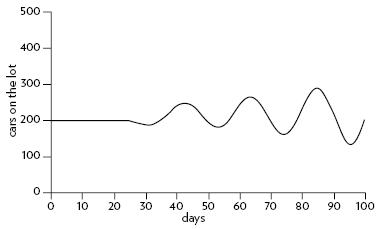
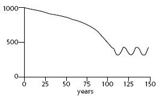

— TWO—
ー二ー
A Brief Visit to the Systems Zoo
参观系统动物园
_____________
是的，是的，是的
The . . . goal of all theory is to make the . . . basic elements as simple and as few as possible without having to surrender the adequate representation of . . . experience.
—Albert Einstein,1 physicist
ー阿尔伯特 · 爱因斯坦，物理学家
One good way to learn something new is through specific examples rather than abstractions and generalities, so here are several common, simple but important examples of systems that are useful to understand in their own right and that will illustrate many general principles of complex systems.
学习新东西的一个好方法是通过具体的例子，而不是抽象和概括，因此，这里有几个系统的常见、简单但重要的例子，它们本身就有助于理解，并将说明复杂系统的许多一般原则。
This collection has some of the same strengths and weaknesses as a zoo.2 It gives you an idea of the large variety of systems that exist in the world, but it is far from a complete representation of that variety. It groups the animals by family—monkeys here, bears there (single-stock systems here, two-stock systems there)—so you can observe the characteristic behaviors of monkeys, as opposed to bears. But, like a zoo, this collection is too neat. To make the animals visible and understandable, it separates them from each other and from their normal concealing environment. Just as zoo animals more naturally occur mixed together in ecosystems, so the systems animals described here normally connect and interact with each other and with others not illustrated here—all making up the buzzing, hooting, chirping, changing complexity in which we live.
这个收藏品和动物园有一些相同的优点和缺点。2它让你对世界上存在的各种各样的系统有了一个概念，但是它远远不能完全代表那种多样性。它把动物按家庭分类——这里的猴子，那里的熊(这里是单股系统，那里是双股系统)——所以你可以观察到猴子的特征行为，而不是熊。但是，就像动物园一样，这些收藏品太整齐了。为了让这些动物可见和易于理解，它们将彼此和它们正常的隐藏环境区分开来。正如动物园里的动物更自然地混合在生态系统中一样，这里描述的动物系统通常相互联系和互动，还有其他没有在这里描述的动物——所有这些都构成了我们生活的嗡嗡声、鸣叫声、啁啾声和不断变化的复杂性。
Ecosystems come later. For the moment, let’s look at one system animal at a time.
生态系统是后来才出现的。现在，让我们一次看一个系统动物。
One-Stock Systems
一个股票系统
A Stock with Two Competing Balancing Loops—a Thermostat
有两个相互竞争的平衡回路的股票ーー恒温器
You already have seen the “homing in” behavior of the goal-seeking balancing feedback loop—the coffee cup cooling. What happens if there are two such loops, trying to drag a single stock toward two different goals?
你已经看到了寻求目标的平衡反馈回路的“归巢”行为——咖啡杯的冷却。如果有两个这样的循环，试图将一只股票拖向两个不同的目标，会发生什么？
One example of such a system is the thermostat mechanism that regulates the heating of your room (or cooling, if it is connected to an air conditioner instead of a furnace). Like all models, the representation of a thermostat in Figure 15 is a simplification of a real home heating system.
这种系统的一个例子是调节房间加热(或冷却，如果它连接到空调而不是炉子)的恒温装置。像所有的模型一样，图15中的恒温器表示是一个真实的家庭供暖系统的简化。
Figure 15. Room temperature regulated by a thermostat and furnace.
图15. 由恒温器和炉子调节的室温。
Whenever the room temperature falls below the thermostat setting, the thermostat detects a discrepancy and sends a signal that turns on the heat flow from the furnace, warming the room. When the room temperature rises again, the thermostat turns off the heat flow. This straightforward, stock-maintaining, balancing feedback loop is shown on the left side of Figure 15. If there were nothing else in the system, and if you start with a cold room with the thermostat set at 18°C (65°F), it would behave as shown in Figure 16. The furnace comes on, and the room warms up. When the room temperature reaches the thermostat setting, the furnace goes off, and the room stays right at the target temperature.
每当室内温度低于恒温器设置时，恒温器就会检测到一个差异，并发出一个信号，打开来自炉子的热流，使室内变暖。当室温再次升高时，恒温器就会关闭热流。图15左侧显示了这个简单的、保持库存的、平衡的反馈回路。如果系统中没有其他东西，如果你从一个恒温器设置在18 ° c (65 ° f)的冷室开始，它的行为将如图16所示。炉子启动，房间温度升高。当室温达到恒温器设置时，炉子就会熄灭，房间就会保持在目标温度。
However, this is not the only loop in the system. Heat also leaks to the outside. The outflow of heat is governed by the second balancing feedback loop, shown on the right side of Figure 15. It is always trying to make the room temperature equal to the outside, just like a coffee cup cooling. If this were the only loop in the system (if there were no furnace), Figure 17 shows what would happen, starting with a warm room on a cold day.
然而，这并不是系统中唯一的回路。热量也会泄漏到外部。热量的流出是由第二个平衡反馈回路控制的，如图15右侧所示。它总是试图使室内温度等于室外的温度，就像咖啡杯冷却一样。如果这是系统中唯一的循环(如果没有炉子) ，图17显示了会发生什么，从一个寒冷的日子里一个温暖的房间开始。
Figure 16. A cold room warms quickly to the thermostat setting.
图16。一个寒冷的房间很快变暖到恒温器的设置。
Figure 17. A warm room cools very slowly to the outside temperature of 10°C.
图17。温暖的房间冷却非常缓慢，室外温度为摄氏10度。
The assumption is that room insulation is not perfect, and so some heat leaks out of the warm room to the cool outdoors. The better the insulation, the slower the drop in temperature would be.
人们假设房间的绝缘性并不完美，因此一些热量从温暖的房间泄漏到凉爽的室外。隔热效果越好，温度下降的速度就越慢。
Now, what happens when these two loops operate at the same time? Assuming that there is sufficient insulation and a properly sized furnace, the heating loop dominates the cooling loop. You end up with a warm room (see Figure 18), even starting with a cold room on a cold day.
现在，当这两个回路同时工作时会发生什么？假设有足够的绝缘材料和适当尺寸的炉子，加热回路主导着冷却回路。你最终会得到一个温暖的房间(见图18) ，即使是在寒冷的天气里开始一个寒冷的房间。
Figure 18. The furnace warms a cool room, even as heat continues to leak from the room.
图18。即使热量继续从房间中泄漏出来，炉子仍然温暖着一个凉爽的房间。
As the room heats up, the heat flowing out of it increases, because there’s a larger gap between inside and outside temperatures. But the furnace keeps putting in more heat than the amount that leaks out, so the room warms nearly to the target temperature. At that point, the furnace cycles off and on as it compensates for the heat constantly flowing out of the room.
随着房间升温，流出的热量增加，因为室内和室外的温度之间有一个更大的差距。但是炉子输入的热量比漏出的热量还要多，所以房间的温度几乎达到了目标温度。在这一点上，炉子循环开关，因为它补偿了不断流出房间的热量。
The thermostat is set at 18°C (65°F) in this simulation, but the room temperature levels off slightly below 18°C (65°F). That’s because of the leak to the outside, which is draining away some heat even as the furnace is getting the signal to put it back. This is a characteristic and sometimes surprising behavior of a system with competing balancing loops. It’s like trying to keep a bucket full when there’s a hole in the bottom. To make things worse, water leaking out of the hole is governed by a feedback loop; the more water in the bucket, the more the water pressure at the hole increases, so the flow out increases! In this case, we are trying to keep the room warmer than the outside and the warmer the room is, the faster it loses heat to the outside. It takes time for the furnace to correct for the increased heat loss—and in that minute still more heat leaks out. In a well-insulated house, the leak will be slower and so the house more comfortable than a poorly insulated one, even a poorly insulated house with a big furnace.
在这个模拟中，恒温器设置在18 ° c (65 ° f) ，但是室内温度略低于18 ° c (65 ° f)。这是因为外部的泄漏导致了一些热量的流失，即使炉子收到了把热量放回去的信号。这是一个具有相互竞争的平衡回路的系统的特征，有时也是令人惊讶的行为。这就像是在底部有个洞的时候，试图让一个桶装满水。更糟糕的是，漏出的水是由一个反馈回路控制的，桶里的水越多，洞口的水压就越大，所以流出的水也就越多！在这种情况下，我们试图保持房间比外面暖和，房间越暖和，它散热到外面的速度就越快。炉子需要时间来修正增加的热量损失——在那一分钟里还有更多的热量泄漏出去。在一个保温良好的房子里，漏水会比较慢，因此房子比保温差的房子更舒适，即使是一个保温差的房子有一个大的火炉。
With home heating systems, people have learned to set the thermostat slightly higher than the actual temperature they are aiming at. Exactly how much higher can be a tricky question, because the outflow rate is higher on cold days than on warm days. But for thermostats this control problem isn’t serious. You can muddle your way to a thermostat setting you can live with.
有了家庭供暖系统，人们已经学会了把恒温器的温度设置得比他们实际的目标温度稍微高一点。到底要提高多少可能是个棘手的问题，因为在寒冷的日子里流出的温度比在温暖的日子里要高。但是对于恒温器来说，这个控制问题并不严重。你可以糊里糊涂地找到一个你能接受的恒温器设置。
For other systems with this same structure of competing balancing loops, the fact that the stock goes on changing while you’re trying to control it can create real problems. For example, suppose you’re trying to maintain a store inventory at a certain level. You can’t instantly order new stock to make up an immediately apparent shortfall. If you don’t account for the goods that will be sold while you are waiting for the order to come in, your inventory will never be quite high enough. You can be fooled in the same way if you’re trying to maintain a cash balance at a certain level, or the level of water in a reservoir, or the concentration of a chemical in a continuously flowing reaction system.
对于其他具有相同竞争平衡回路结构的系统来说，当你试图控制股票时，股票持续变化的事实可能会产生真正的问题。例如，假设你试图维持一个商店的库存在一个特定的水平。你不能立即订购新的库存来弥补短缺。如果你在等待订单的时候没有考虑到将要出售的商品，你的库存就永远不会足够高。如果你试图将现金余额保持在一定水平，或水库中的水位，或连续流动的反应系统中某种化学物质的浓度，你也会被同样的方式愚弄。
There’s an important general principle here, and also one specific to the thermostat structure. First the general one: The information delivered by a feedback loop can only affect future behavior; it can’t deliver the information, and so can’t have an impact fast enough to correct behavior that drove the current feedback. A person in the system who makes a decision based on the feedback can’t change the behavior of the system that drove the current feedback; the decisions he or she makes will affect only future behavior.
这里有一个重要的一般原则，也有一个特殊的恒温器结构。首先是一般性问题: 反馈回路传递的信息只能影响未来的行为; 它不能传递信息，因此不能产生足够快的影响，以纠正驱动当前反馈的行为。系统中根据反馈做出决策的人不能改变驱动当前反馈的系统行为，他或她所做的决策只会影响未来的行为。
The information delivered by a feedback loop—even nonphysical feedback—can only affect future behavior; it can’t deliver a signal fast enough to correct behavior that drove the current feedback. Even nonphysical information takes time to feedback into the system.
Why is that important? Because it means there will always be delays in responding. It says that a flow can’t react instantly to a flow. It can react only to a change in a stock, and only after a slight delay to register the incoming information. In the bathtub, it takes a split second of time to assess the depth of the water and decide to adjust the flows. Many economic models make a mistake in this matter by assuming that consumption or production can respond immediately, say, to a change in price. That’s one of the reasons why real economies tend not to behave exactly like many economic models.
这有什么重要的？因为这意味着反应总是会有延迟。它说一个流不能立即对一个流做出反应。它只能对股票的变化做出反应，并且只能在稍微延迟之后注册传入的信息。在浴缸里，它需要一瞬间来评估水的深度，并决定调整流量。许多经济模型在这个问题上犯了一个错误，假设消费或生产可以立即作出反应，比如说，价格的变化。这就是为什么实体经济往往不会表现得完全像许多经济模型的原因之一。
The specific principle you can deduce from this simple system is that you must remember in thermostat-like systems to take into account whatever draining or filling processes are going on. If you don’t, you won’t achieve the target level of your stock. If you want your room temperature to be at 18°C (65°F), you have to set the thermostat a little above the desired temperature. If you want to pay off your credit card (or the national debt), you have to raise your repayment rate high enough to cover the charges you incur while you’re paying (including interest). If you’re gearing up your work force to a higher level, you have to hire fast enough to correct for those who quit while you are hiring. In other words, your mental model of the system needs to include all the important flows, or you will be surprised by the system’s behavior.
从这个简单的系统可以推断出的具体原理是，必须记住，在类似恒温器的系统中，必须考虑到正在进行的任何排水或灌装过程。如果你不这样做，你就无法达到库存的目标水平。如果你想让你的室温达到18摄氏度(65华氏度) ，你必须把恒温器的温度调高一点。如果你想还清你的信用卡(或国家债务) ，你必须提高你的还款利率足够高，以支付你在支付(包括利息)时发生的费用。如果你正在把你的劳动力提升到一个更高的水平，你必须尽快招聘，以纠正那些在你招聘时辞职的人。换句话说，你对系统的心理模型需要包括所有重要的流程，否则你会对系统的行为感到惊讶。
A stock-maintaining balancing feedback loop must have its goal set appropriately to compensate for draining or inflowing processes that affect that stock. Otherwise, the feedback process will fall short of or exceed the target for the stock.
Before we leave the thermostat, we should see how it behaves with a varying outside temperature. Figure 19 shows a twenty-four-hour period of normal operation of a well-functioning thermostat system, with the outside temperature dipping well below freezing. The inflow of heat from the furnace nicely tracks the outflow of heat to the outside. The temperature in the room varies hardly at all once the room has warmed up.
在我们离开恒温器之前，我们应该看看它在不同的外部温度下是如何工作的。图19显示了一个运行良好的恒温器系统24小时的正常运行周期，室外温度远低于冰点。从炉子中流入的热量很好地跟踪了热量向外部的流出。一旦房间变暖，房间里的温度几乎没有变化。
Every balancing feedback loop has its breakdown point, where other loops pull the stock away from its goal more strongly than it can pull back. That can happen in this simulated thermostat system, if I weaken the power of the heating loop (a smaller furnace that cannot put out as much heat), or if I strengthen the power of the cooling loop (colder outside temperature, less insulation, or larger leaks). Figure 20 shows what happens with the same outside temperatures as in Figure 19, but with faster heat loss from the room. At very cold temperatures, the furnace just can’t keep up with the heat drain. The loop that is trying to bring the room temperature down to the outside temperature dominates the system for a while. The room gets pretty uncomfortable!
每个平衡反馈回路都有自己的崩溃点，其他回路把股票从目标上拉回来的力度比它能拉回来的力度更大。在这个模拟的恒温系统中，如果我削弱了加热回路的功率(一个不能发出同样多热量的较小的炉子) ，或者如果我加强了冷却回路的功率(室外温度更低，绝缘更少，或者泄漏更多) ，就会发生这种情况。图20显示了与图19相同的室外温度，但室内热量损失更快的情况。在非常低的温度下，炉子就是跟不上热量的流失。试图将室温降低到室外温度的循环控制了系统一段时间。房间变得相当不舒服！
Figure 19. The furnace warms a cool room, even as heat leaks from the room and outside temperatures drop below freezing.
图19。炉子温暖了一个凉爽的房间，即使热量从房间和室外的温度下降到冰点以下。
Figure 20. On a cold day, the furnace can’t keep the room warm in this leaky house!
图20。在寒冷的一天，在这个漏水的房子里，炉子不能使房间保持温暖！
See if you can follow, as time unfolds, how the variables in Figure 20 relate to one another. At first, both the room and the outside temperatures are cool. The inflow of heat from the furnace exceeds the leak to the outside, and the room warms up. For an hour or two, the outside is mild enough that the furnace replaces most of the heat that’s lost to the outside, and the room temperature stays near the desired temperature.
看看随着时间的推移，您是否能够了解图20中的变量是如何相互关联的。起初，室内和室外的温度都很低。从炉子里流入的热量超过了向外泄漏的热量，房间就变暖了。在一两个小时内，室外温度足够温和，以至于炉子可以替代大部分流失到室外的热量，室温也可以保持在理想的温度附近。
But as the outside temperature falls and the heat leak increases, the furnace cannot replace the heat fast enough. Because the furnace is generating less heat than is leaking out, the room temperature falls. Finally, the outside temperature rises again, the heat leak slows, and the furnace, still operating at full tilt, finally can pull ahead and start to warm the room again.
但是，由于外部温度下降，热泄漏增加，炉子不能取代热量足够快。因为炉子产生的热量比漏出的热量要少，所以室温就会下降。最后，外面的温度再次上升，热泄漏减慢，炉子仍然全速运转，最后可以拉动，开始温暖的房间再次。
Just as in the rules for the bathtub, whenever the furnace is putting in more heat than is leaking out, the room temperature rises. Whenever the inflow rate falls behind the outflow rate, the temperature falls. If you study the system changes on this graph for a while and relate them to the feedback-loop diagram of this system, you’ll get a good sense of how the structural interconnections of this system—its two feedback loops and how they shift in strength relative to each other—lead to the unfolding of the system’s behavior over time.
就像浴缸的规则一样，每当炉子放入的热量超过泄漏的热量时，室内温度就会升高。当流入速率低于流出速率时，温度就会下降。如果你在这张图上研究一段时间系统的变化，并将它们与这个系统的反馈回路图联系起来，你就会很好地理解这个系统的结构性相互联系——它的两个反馈回路以及它们相互之间的强度变化——是如何导致系统行为随着时间的推移而展开的。
A Stock with One Reinforcing Loop and One Balancing Loop—Population and Industrial Economy
一个加强环一个平衡环的股票ーー人口与工业经济
What happens when a reinforcing and a balancing loop are both pulling on the same stock? This is one of the most common and important system structures. Among other things, it describes every living population and every economy.
当一个强化循环和一个平衡循环同时拉动同一个股票时会发生什么？这是最常见也是最重要的系统结构之一。除此之外，它描述了每一个活着的人口和每一个经济体。
A population has a reinforcing loop causing it to grow through its birth rate, and a balancing loop causing it to die off through its death rate.
一个种群有一个强化循环，使它通过其出生率增长，和一个平衡循环，使它通过其死亡率死亡。
Figure 21. Population governed by a reinforcing loop of births and a balancing loop of deaths.
图21. 由出生和死亡的加强循环控制的人口。
As long as fertility and mortality are constant (which in real systems they rarely are), this system has a simple behavior. It grows exponentially or dies off, depending on whether its reinforcing feedback loop determining births is stronger than its balancing feedback loop determining deaths.
只要生育率和死亡率是恒定的(在现实系统中很少这样) ，这个系统就有一个简单的行为。它是指数增长还是消亡，取决于决定生育的强化反馈回路是否比决定死亡的平衡反馈回路更强。
For example, the 2007 world population of 6.6 billion people had a fertility rate of roughly 21 births a year for every 1,000 people in the population.Its mortality rate was 9 deaths a year out of every 1,000 people. Fertility was higher than mortality, so the reinforcing loop dominated the system. If those fertility and mortality rates continue unchanged, a child born now will see the world population more than double by the time he or she reaches the age of 60, as shown in Figure 22.
例如，2007年世界人口为66亿，生育率约为每1000人每年生育21个孩子。其死亡率为每年每1000人中有9人死亡。生育率高于死亡率，因此强化循环主导了整个系统。如果这些生育率和死亡率保持不变，现在出生的儿童到60岁时世界人口将增加一倍以上，如图22所示。
If, because of a terrible disease, the mortality rate were higher, say at 30 deaths per 1,000, while the fertility rate remained at 21, then the death loop would dominate the system. More people would die each year than would be born, and the population would gradually decrease (Figure 23).
如果，由于一种可怕的疾病，死亡率更高，比如说每1000人中有30人死亡，而生育率保持在21，那么死亡循环将主宰整个系统。每年死亡的人数将超过出生人数，人口将逐渐减少(图23)。
Figure 22. Population growth if fertility and mortality maintain their 2007 levels of 21 births and nine deaths per 1,000 people.
图22。如果生育率和死亡率保持在2007年的水平，即每1000人中有21人出生，9人死亡，人口就会增长。
Figure 23. Population decline if fertility remains at 2007 level (21 births per 1,000) but mortality is much higher, 30 deaths per 1,000.
图23。如果生育率保持在2007年的水平(每1000人中有21人出生) ，人口就会下降，但死亡率要高得多，每1000人中有30人死亡。
Things get more interesting when fertility and mortality change over time. When the United Nations makes long-range population projections, it generally assumes that, as countries become more developed, average fertility will decline (approaching replacement where on average each woman has 1.85 children). Until recently, assumptions about mortality were that it would also decline, but more slowly (because it is already low in most parts of the world). However, because of the epidemic of HIV/ AIDS, the UN now assumes the trend of increasing life expectancy over the next fifty years will slow in regions affected by HIV/AIDS.
当生育率和死亡率随着时间的推移而改变时，事情就变得更有趣了。当联合国进行长期人口预测时，它通常假定，随着国家变得更加发达，平均生育率将下降(接近更替，平均每个妇女有1.85个孩子)。直到最近，关于死亡率的假设还是认为它也会下降，但下降得更慢(因为世界上大部分地区的死亡率已经很低了)。然而，由于艾滋病毒/艾滋病的流行，联合国现在假定，未来五十年预期寿命增长的趋势将在受艾滋病毒/艾滋病影响的地区放缓。
Changing flows (fertility and mortality) create a change in the behavior over time of the stock (population)—the line bends. If, for example, world fertility falls steadily to equal mortality by the year 2035 and they both stay constant thereafter, the population will level off, births exactly balancing deaths in dynamic equilibrium, as in Figure 24.
不断变化的流量(生育率和死亡率)会随着时间的推移而改变种群(人口)的行为——曲线发生弯曲。例如，如果到2035年，世界生育率稳步下降至死亡率相等，此后两者保持不变，人口将趋于平稳，出生率将在动态平衡中完全平衡死亡率，如图24所示。

Figure 24. Population stabilizes when fertility equals mortality.
图24. 当生育率等于死亡率时，人口稳定。
This behavior is an example of shifting dominance of feedback loops. Dominance is an important concept in systems thinking. When one loop dominates another, it has a stronger impact on behavior. Because systems often have several competing feedback loops operating simultaneously, those loops that dominate the system will determine the behavior.
这种行为是反馈回路优势转移的一个例子。优势是系统思维中的一个重要概念。当一个循环支配另一个循环时，它会对行为产生更强的影响。因为系统通常有几个相互竞争的反馈回路同时运行，这些控制系统的回路将决定行为。
At first, when fertility is higher than mortality, the reinforcing growth loop dominates the system and the resulting behavior is exponential growth. But that loop is gradually weakened as fertility falls. Finally, it exactly equals the strength of the balancing loop of mortality. At that point neither loop dominates, and we have dynamic equilibrium.
首先，当生育率高于死亡率时，强化生长循环主导系统，其结果是指数增长。但随着生育率的下降，这个循环逐渐减弱。最后，它完全等同于死亡率平衡回路的强度。在这一点上，没有一个循环占主导地位，我们有了动态平衡。
You saw shifting dominance in the thermostat system, when the outside temperature fell and the heat leaking out of the poorly insulated house overwhelmed the ability of the furnace to put heat into the room. Dominance shifted from the heating loop to the cooling loop.
你看到了恒温器系统的变化，当室外温度下降，热量从隔热性能差的房子泄漏出来，使得炉子无法向房间供热。主导地位从加热回路转移到了冷却回路。
Complex behaviors of systems often arise as the relative strengths of feedback loops shift, causing first one loop and then another to dominate behavior.
There are only a few ways a population system could behave, and these depend on what happens to the “driving” variables, fertility and mortality. These are the only ones possible for a simple system of one reinforcing and one balancing loop. A stock governed by linked reinforcing and balancing loops will grow exponentially if the reinforcing loop dominates the balancing one. It will die off if the balancing loop dominates the reinforcing one. It will level off if the two loops are of equal strength (see Figure 25). Or it will do a sequence of these things, one after another, if the relative strengths of the two loops change over time (see Figure 26).
人口系统的行为方式只有几种，这取决于“驱动”变量——生育率和死亡率——的变化。对于一个简单的系统来说，这些都是唯一可能的，一个强化系统，一个平衡系统。如果连接的加强和平衡回路支配了平衡回路，那么由连接的加强和平衡回路支配的股票将呈指数增长。如果平衡回路支配了加固回路，它就会消失。如果两个回路具有相同的强度，它就会平稳下来(见图25)。或者，如果两个循环的相对强度随着时间的推移而发生变化，它将一个接一个地执行这些操作(参见图26)。
I chose some provocative population scenarios here to illustrate a point about models and the scenarios they can generate. Whenever you are confronted with a scenario (and you are, every time you hear about an economic prediction, a corporate budget, a weather forecast, future climate change, a stockbroker saying what is going to happen to a particular holding), there are questions you need to ask that will help you decide how good a representation of reality is the underlying model.
我在这里选择了一些具有挑战性的人口情景来说明模型和它们可以产生的情景。每当你面对一个场景(每当你听到一个经济预测，一个公司预算，一个天气预报，未来气候变化，一个股票经纪人在说一个特定的股票会发生什么) ，你都需要问一些问题，这些问题将帮助你决定现实的表现有多好，这是一个潜在的模型。
• Are the driving factors likely to unfold this way? (What are birth rate and death rate likely to do?)
• If they did, would the system react this way? (Do birth and death rates really cause the population stock to behave as we think it will?)
• What is driving the driving factors? (What affects birth rate? What affects death rate?)
The first question can’t be answered factually. It’s a guess about the future, and the future is inherently uncertain. Although you may have a strong opinion about it, there’s no way to prove you’re right until the future actually happens. A systems analysis can test a number of scenarios to see what happens if the driving factors do different things. That’s usually one purpose of a systems analysis. But you have to be the judge of which scenario, if any, should be taken seriously as a future that might really be possible.
第一个问题不能实事求是地回答。这是对未来的猜测，而未来本身就是不确定的。尽管你可能对此有着强烈的看法，但是在未来真正发生之前，没有办法证明你是正确的。一个系统分析可以测试许多场景，看看如果驱动因素做了不同的事情会发生什么。这通常是系统分析的目的之一。但是你必须判断哪种情况，如果有的话，应该被认真对待，因为未来可能真的会发生。
A: Growth
答: 增长
B: Decline
B: 拒绝
C: Stabilization
稳定
Figure 25. Three possible behaviors of a population: growth, decline, and stabilization.
图25人口的三种可能行为: 增长、下降和稳定。
Dynamic systems studies usually are not designed to predict what will happen. Rather, they’re designed to explore what would happen, if a number of driving factors unfold in a range of different ways.
动态系统研究通常不是为了预测将会发生什么而设计的。相反，它们旨在探索如果一些驱动因素以一系列不同的方式展现出来，将会发生什么。
Figure 26. Shifting dominance of fertility and mortality loops.
图26. 生育率和死亡率循环的变化主导地位。
The second question—whether the system really will react this way—is more scientific. It’s a question about how good the model is. Does it capture the inherent dynamics of the system? Regardless of whether you think the driving factors will do that, would the system behave like that if they did?
第二个问题——系统是否真的会以这种方式作出反应——更加科学。这是一个关于模型有多好的问题。它是否捕捉到了系统固有的动态性？不管你是否认为驱动因素会做到这一点，如果他们做到了，系统会表现得像那样吗？
In the population scenarios above, however likely you think they are, the answer to this second question is roughly yes, the population would behave like this, if the fertility and mortality did that. The population model I have used here is very simple. A more detailed model would distinguish age groups, for example. But basically this model responds the way a real population would, growing under the conditions when a real population would grow, declining when a real population would decline. The numbers are off, but the basic behavior pattern is realistic.
在上面的人口情景中，无论你认为它们是多么的可能，第二个问题的答案大致是肯定的，如果生育率和死亡率是这样的话，人口的行为会是这样的。我在这里使用的人口模型非常简单。例如，一个更详细的模型可以区分不同的年龄组。但基本上，这个模型反映了真实人口的增长方式，在真实人口增长的情况下增长，在真实人口减少的情况下减少。数字是错误的，但是基本的行为模式是现实的。
System dynamics models explore possible futures and ask “what if” questions.
Finally, there is the third question. What is driving the driving factors?
最后，还有第三个问题，驱动因素是什么？
QUESTIONS FOR TESTING THE VALUE OF A MODEL
1. Are the driving factors likely to unfold this way?
2. If they did, would the system react this way?
3. What is driving the driving factors?
Model utility depends not on whether its driving scenarios are realistic (since no one can know that for sure), but on whether it responds with a realistic pattern of behavior.
What is adjusting the inflows and outflows? This is a question about system boundaries. It requires a hard look at those driving factors to see if they are actually independent, or if they are also embedded in the system.
什么是调整流入和流出？这是一个关于系统边界的问题。我们需要仔细研究这些驱动因素，看看它们是否真的是独立的，或者它们是否也嵌入在系统中。
Is there anything about the size of the population, for instance, that might feed back to influence fertility or mortality? Do other factors—economics, the environment, social trends—influence fertility and mortality? Does the size of the population affect those economic and environmental and social factors?
例如，人口规模有没有可能反过来影响生育率或死亡率？其他因素——经济、环境、社会趋势——会影响生育率和死亡率吗？人口规模是否影响这些经济、环境和社会因素？
Of course, the answer to all of these questions is yes. Fertility and mortality are governed by feedback loops too. At least some of those feedback loops are themselves affected by the size of the population. This population “animal” is only one piece of a much larger system.3 Jay W. Forrester,
当然，这些问题的答案都是肯定的。生育率和死亡率也是由反馈回路控制的。至少其中的一些反馈回路本身会受到人口规模的影响。这个种群“动物”只是一个更大系统的一部分,
One important piece of the larger system that affects population is the economy. At the heart of the economy is another reinforcing-loop-plus-balancing- loop system—the same kind of structure, with the same kinds of behavior, as the population (see Figure 27).
影响人口的一个重要因素是经济。在经济的核心是另一个加强循环加平衡循环系统——与人口相同的结构，具有相同的行为类型(见图27)。
The greater the stock of physical capital (machines and factories) in the economy and the efficiency of production (output per unit of capital), the more output (goods and services) can be produced each year.
经济中有形资本(机器和工厂)的存量和生产效率(单位资本产出)越大，每年可以生产的产出(商品和服务)就越多。
Figure 27. Like a living population, economic capital has a reinforcing loop (investment of output) governing growth and a balancing loop (depreciation) governing decline.
图27。就像活着的人口一样，经济资本有一个控制增长的强化循环(产出投资)和控制衰退的平衡循环(贬值)。
The more output that is produced, the more can be invested to make new capital. This is a reinforcing loop, like the birth loop for a population. The investment fraction is equivalent to the fertility. The greater the fraction of its output a society invests, the faster its capital stock will grow.
生产的产出越多，投资于新资本的可能性就越大。这是一个强化循环，就像人口的出生循环。投资比例等于生育率。一个社会投资的产出比例越大，其资本存量增长就越快。
Physical capital is drained by depreciation—obsolescence and wearing out. The balancing loop controlling depreciation is equivalent to the death loop in a population. The “mortality” of capital is determined by the average capital lifetime. The longer the lifetime, the smaller the fraction of capital that must be retired and replaced each year.
物质资本被贬值——过时和耗尽——耗尽。控制贬值的平衡循环相当于人口中的死亡循环。资本的“死亡率”取决于资本的平均寿命。寿命越长，每年必须退休和更换的资本比例就越小。
If this system has the same structure as the population system, it must have the same repertoire of behaviors. Over recent history world capital, like world population, has been dominated by its reinforcing loop and has been growing exponentially. Whether in the future it grows or stays constant or dies off depends on whether its reinforcing growth loop remains stronger than its balancing depreciation loop. That depends on
如果这个系统具有与人口系统相同的结构，那么它必须具有相同的行为库。在最近的历史中，世界资本和世界人口一样，被它的强化循环所支配，并且呈指数级增长。在未来，它是增长还是保持不变，还是消亡，取决于它的增长循环是否比平衡的贬值循环更强。这取决于
• the investment fraction—how much output the society invests rather than consumes,
• the efficiency of capital—how much capital it takes to produce a given amount of output, and
• the average capital lifetime.
If a constant fraction of output is reinvested in the capital stock and the efficiency of that capital (its ability to produce output) is also constant, the capital stock may decline, stay constant, or grow, depending on the lifetime of the capital. The lines in Figure 28 show systems with different average capital lifetimes. With a relatively short lifetime, the capital wears out faster than it is replaced. Reinvestment does not keep up with depreciation and the economy slowly declines. When depreciation just balances investment, the economy is in dynamic equilibrium. With a long lifetime, the capital stock grows exponentially. The longer the lifetime of capital, the faster it grows.
如果一定比例的产出再投资于资本存量，而该资本的效率(其生产产出的能力)也保持不变，则资本存量可能会下降、保持不变或增长，这取决于资本的寿命。图28中的线显示了具有不同平均资本寿命的系统。由于生命周期相对较短，资本耗尽的速度比替换的速度要快。再投资跟不上贬值，经济就会慢慢衰退。当贬值只是平衡投资时，经济处于动态平衡状态。随着生命周期的延长，资本存量呈指数增长。资本寿命越长，增长越快。
This is another example of a principle we’ve already encountered: You can make a stock grow by decreasing its outflow rate as well as by increasing its inflow rate!
这是我们已经遇到的另一个原理的例子: 你可以通过降低流出率和增加流入率来使股票增长！
Just as many factors influence the fertility and mortality of a population, so many factors influence the output ratio, investment fraction, and the lifetime of capital—interest rates, technology, tax policy, consumption habits, and prices, to name just a few. Population itself influences investment, both by contributing labor to output, and by increasing demands on consumption, thereby decreasing the investment fraction. Economic output also feeds back to influence population in many ways. A richer economy usually has better health care and a lower death rate. A richer economy also usually has a lower birth rate.
正如许多因素影响人口的生育率和死亡率一样，也有许多因素影响产出率、投资比例和资本寿命——利率、技术、税收政策、消费习惯和价格等等。人口本身影响投资，既通过劳动力对产出的贡献，也通过增加消费需求，从而降低投资比例。经济产出也在许多方面反馈到对人口的影响。一个富裕的经济体通常有更好的医疗保健和更低的死亡率。一个富裕的经济体通常也有较低的出生率。
Figure 28. Growth in capital stock with changes in the lifetime of the capital. In a system with output per unit capital ratio of 1:3 and an investment fraction of 20 percent, capital with a lifetime of 15 years just keeps up with depreciation. A shorter lifetime leads to a declining stock of capital.
图28。资本存量随着资本寿命的变化而增长。在一个单位资本产出比为1:3，投资比例为20% 的系统中，资本寿命为15年的资本只能跟上折旧的速度。寿命越短，资本存量就越少。
In fact, just about any long term model of a real economy should link together the two structures of population and capital to show how they affect each other. The central question of economic development is how to keep the reinforcing loop of capital accumulation from growing more slowly than the reinforcing loop of population growth—so that people are getting richer instead of poorer.4
事实上，几乎任何实体经济的长期模型都应该将人口和资本这两种结构联系起来，以显示它们如何相互影响。经济发展的中心问题是，如何使资本积累的增长循环不至于比人口增长的增长循环更慢，从而使人们变得更富有而不是更贫穷
It may seem strange to you that I call the capital system the same kind of “zoo animal” as the population system. A production system with factories and shipments and economic flows doesn’t look much like a population system with babies being born and people aging and having more babies and dying. But from a systems point of view these systems, so dissimilar in many ways, have one important thing in common: their feedback-loop structures. Both have a stock governed by a reinforcing growth loop and a balancing death loop.Both also have an aging process. Steel mills and lathes and turbines get older and die just as people do.
你可能觉得奇怪，我把首都系统称为和人口系统一样的“动物园动物”。一个拥有工厂、货运和经济流动的生产系统，看起来不太像一个婴儿出生、人口老龄化、生育更多婴儿和死亡的人口系统。但是从系统的角度来看，这些系统，在许多方面如此不同，有一个重要的共同点: 它们的反馈回路结构。两者都有一个由强化增长循环和平衡死循环控制的股票。两者都有一个衰老的过程。钢铁厂、车床、涡轮机和人们一样老化和死亡。
Systems with similar feedback structures produce similar dynamic behaviors.
One of the central insights of systems theory, as central as the observation that systems largely cause their own behavior, is that systems with similar feedback structures produce similar dynamic behaviors, even if the outward appearance of these systems is completely dissimilar.
系统理论的核心见解之一，与观察到系统在很大程度上导致其自身行为一样，是具有相似反馈结构的系统会产生相似的动态行为，即使这些系统的外观完全不同。
A population is nothing like an industrial economy, except that both can reproduce themselves out of themselves and thus grow exponentially. And both age and die. A coffee cup cooling is like a warmed room cooling, and like a radioactive substance decaying, and like a population or industrial economy aging and dying. Each declines as the result of a balancing feedback loop.
人口与工业经济完全不同，除非两者都能自我复制，从而呈指数增长。不管是衰老还是死亡。一个咖啡杯的冷却就像一个温暖的房间的冷却，就像一个放射性物质的衰退，就像一个人口或工业经济的老化和死亡。每一次衰退都是平衡反馈回路的结果。
A System with Delays—Business Inventory
具有延迟的系统ーー企业库存
Picture a stock of inventory in a store—a car dealership—with an inflow of deliveries from factories and an outflow of new car sales. By itself, this stock of cars on the dealership lot would behave like the water in a bathtub.
想象一下一家商店(汽车经销商)的库存，工厂的货物流入，新车销售的流出。就其本身而言，经销商停车场上的这些汽车库存就像浴缸里的水一样。
Now picture a regulatory feedback system designed to keep the inventory high enough so that it can always cover ten days’ worth of sales (see Figure 29). The car dealer needs to keep some inventory because deliveries and purchases don’t match perfectly every day. Customers make purchases that are unpredictable on a day-to-day basis. The car dealer also needs to provide herself with some extra inventory (a buffer) in case deliveries from suppliers are delayed occasionally.
现在设想一个监管反馈系统，旨在保持足够高的库存，以便它总是能够覆盖10天的销售额(见图29)。汽车经销商需要保留一些库存，因为交货和购买并不是每天都完美匹配。消费者每天的购买行为都是不可预测的。汽车经销商还需要为自己提供一些额外的库存(缓冲) ，以防供应商偶尔推迟交货。
Figure 29. Inventory at a car dealership is kept steady by two competing balancing loops, one through sales and one through deliveries.
图29。汽车经销商的库存通过两个相互竞争的平衡循环保持稳定，一个通过销售，一个通过交付。
The dealer monitors sales (perceived sales), and if, for example, they seem to be rising, she adjusts orders to the factory to bring inventory up to her new desired inventory that provides ten days’ coverage at the higher sales rate. So, higher sales mean higher perceived sales, which means a higher discrepancy between inventory and desired inventory, which means higher orders, which will bring in more deliveries, which will raise inventory so it can comfortably supply the higher rate of sales.
经销商监控销售(感知销售) ，如果，例如，他们似乎在上升，她调整订单到工厂，使库存达到她的新的期望库存，提供了10天的覆盖率，以较高的销售率。所以，更高的销售额意味着更高的感知销售额，这意味着更高的库存和期望的库存之间的差异，这意味着更高的订单，这将带来更多的交货，这将增加库存，所以它可以轻松地供应更高的销售率。
This system is a version of the thermostat system—one balancing loop of sales draining the inventory stock and a competing balancing loop maintaining the inventory by resupplying what is lost in sales. Figure 30 shows the not very surprising result of an increase in consumer demand of 10 percent.
这个系统是恒温系统的一个版本——一个销售平衡回路消耗库存，一个竞争平衡回路通过补充销售中的损失来维持库存。图30显示了消费者需求增长10% 所带来的并不令人惊讶的结果。
In Figure 31, I am putting something else into this simple model—three delays that are typical of what we experience in the real world.
在图31中，我在这个简单的模型中加入了其他东西——我们在现实世界中经历的典型的三个延迟。
First, there is a perception delay, intentional in this case. The car dealer doesn’t react to just any blip in sales. Before she makes ordering decisions, she averages sales over the past five days to sort out real trends from temporary dips and spikes.
首先，有一个感知延迟，在这种情况下是故意的。汽车经销商不会对任何销量波动做出反应。在她做出订单决定之前，她会对过去五天的销售情况进行平均分析，从暂时的下跌和上涨中找出真正的趋势。
Second, there is a response delay. Even when it’s clear that orders need to be adjusted, she doesn’t try to make up the whole adjustment in a single order. Rather, she makes up one-third of any shortfall with each order. Another way of saying that is, she makes partial adjustments over three days to be extra sure the trend is real. Third, there is a delivery delay. It takes five days for the supplier at the factory to receive an order, process it, and deliver it to the dealership.
其次，存在响应延迟。即使很明显订单需要调整，她也不会试图在一个订单中完成整个调整。相反，她会在每个订单中弥补三分之一的缺口。换句话说，她会在三天内进行部分调整，以确保趋势是真实的。第三，交货延迟。工厂的供应商需要五天的时间来接收订单，处理订单，然后交付给经销商。
Figure 30. Inventory on the car dealership’s lot with a permanent 10-percent increase in consumer demand starting on day 25.
图30. 从第25天开始，汽车经销商的库存将永久性地增加10% 的消费者需求。
Figure 31. Inventory at a car dealership with three common delays now included in the picture—a perception delay, a response delay, and a delivery delay.
图31。一家汽车经销商的库存现在包括三种常见的延迟——感知延迟、响应延迟和交货延迟。
Although this system still consists of just two balancing loops, like the simplified thermostat system, it doesn’t behave like the thermostat system. Look at what happens, for example, as shown in Figure 32, when the business experiences the same permanent 10-percent jump in sales from an increase in customer demand.
尽管这个系统仍然只包含两个平衡回路，就像简化的恒温系统一样，但它的行为并不像恒温系统一样。看看会发生什么，例如，如图32所示，当业务从客户需求的增加中经历同样的永久性10% 的销售增长时。

Figure 32. Response of inventory to a 10-percent increase in sales when there are delays in the system.
图32。当系统出现延迟时，库存对销售增长10% 的响应。
Oscillations! A single step up in sales causes inventory to drop. The car dealer watches long enough to be sure the higher sales rate is going to last. Then she begins to order more cars to both cover the new rate of sales and bring the inventory up. But it takes time for the orders to come in. During that time inventory drops further, so orders have to go up a little more, to bring inventory back up to ten days’ coverage.
振荡！销售额上升一步就会导致库存下降。汽车经销商观察的时间足够长，以确保更高的销售率将持续下去。然后，她开始订购更多的汽车，以满足新的销售率，并提高库存。但是订单需要时间才能收到。在此期间，库存进一步下降，所以订单必须再上升一点，使库存恢复到10天的覆盖范围。
Eventually, the larger volume of orders starts arriving, and inventory recovers—and more than recovers, because during the time of uncertainty about the actual trend, the owner has ordered too much. She now sees her mistake, and cuts back, but there are still high past orders coming in, so she orders even less. In fact, almost inevitably, since she still can’t be sure of what is going to happen next, she orders too little. Inventory gets too low again. And so forth, through a series of oscillations around the new desired inventory level. As Figure 33 illustrates, what a difference a few delays make!
最终，更大量的订单开始到达，库存开始恢复——而且恢复的比恢复的还要多，因为在实际趋势不确定的时候，所有者已经订购了太多。她现在意识到了自己的错误，于是削减了订单，但是过去的订单仍然很多，所以订单更少了。事实上，几乎不可避免的是，由于她仍然不能确定接下来会发生什么，她订购的东西太少了。库存再次变得过低。以此类推，通过一系列围绕新的期望库存水平的振荡。如图33所示，一些延迟会产生多么大的影响！
We’ll see in a moment that there are ways to damp these oscillations in inventory, but first it’s important to understand why they occur. It isn’t because the car dealer is stupid. It’s because she is struggling to operate in a system in which she doesn’t have, and can’t have, timely information and in which physical delays prevent her actions from having an immediate effect on inventory. She doesn’t know what her customers will do next. When they do something, she’s not sure they’ll keep doing it. When she issues an order, she doesn’t see an immediate response. This situation of information insufficiency and physical delays is very common. Oscillations like these are frequently encountered in inventories and in many other systems. Try taking a shower sometime where there’s a very long pipe between the hot- and cold-water mixer and the showerhead, and you’ll experience directly the joys of hot and cold oscillations because of a long response delay.
我们很快就会看到有办法抑制库存中的这些波动，但是首先重要的是要了解它们为什么会发生。这并不是因为汽车经销商愚蠢。这是因为她正在一个她没有，也不可能有及时信息的系统中挣扎，在这个系统中，物理延迟阻止了她的行为对库存产生直接影响。她不知道她的客户下一步会做什么。当他们做某事时，她不确定他们是否会继续做下去。当她下达命令时，她看不到立即的回应。这种信息不足和物理延迟的情况非常普遍。这样的震荡在库存和其他许多系统中经常遇到。试着在冷热水混合器和淋浴喷头之间有一根很长的管子的地方洗澡，你会直接体验到冷热振荡的乐趣，因为有一个很长的响应延迟。
A delay in a balancing feedback loop makes a system likely to oscillate.
How much of a delay causes what kind of oscillation under what circumstances is not a simple matter. I can use this inventory system to show you why.
在什么情况下，延迟多长时间会引起什么样的振荡并不是一个简单的问题。我可以用这个库存系统来告诉你为什么。
“These oscillations are intolerable,” says the car dealer (who is herself a learning system, determined now to change the behavior of the inventory system). “I’m going to shorten the delays. There’s not much I can do about the delivery delay from the factory, so I’m going to react faster myself. I’ll average sales trends over only two days instead of five before I make order adjustments.”
“这些振荡是无法容忍的,”汽车经销商说(她自己就是一个学习系统，现在决心改变库存系统的行为)。我打算缩短延迟时间。对于工厂的交货延迟，我无能为力，所以我要自己做出更快的反应。在做出订单调整之前，我会把销售趋势平均在两天之内，而不是五天。”
Figure 33. The response of orders and deliveries to an increase in demand. A shows the small but sharp step up in sales on day 25 and the car dealer’s “perceived” sales, in which she averages the change over 3 days. B shows the resulting ordering pattern, tracked by the actual deliveries from the factory.
图33。订单和交货对需求增长的反应。A 显示了在第25天销售量的小而急剧的增长，以及汽车经销商的“感知”销售量，其中她在3天内的平均变化。B 显示了由此产生的订单模式，并根据工厂的实际交货情况进行跟踪。
Figure 34 illustrates what happens when the dealer’s perception delay is shortened from five days to two.
图34说明了当经销商的感知延迟从5天缩短到2天时会发生什么。
Not much happens when the car dealer shortens her perception delay. If anything the oscillations in the inventory of cars on the lot are a bit worse. And if, instead of shortening her perception time, the car dealer tries shortening her reaction time—making up perceived shortfalls in two days instead of three—things get very much worse, as shown in Figure 35.
当汽车经销商缩短她的感知延迟时，并不会发生什么。如果说有什么变化的话，那就是停车场的汽车库存的振荡更糟糕一些。如果汽车经销商不是缩短她的感知时间，而是试图缩短她的反应时间——用两天而不是三天来弥补感知的不足——情况就会变得非常糟糕，如图35所示。
Something has to change and, since this system has a learning person within it, something will change. “High leverage, wrong direction,” the system-thinking car dealer says to herself as she watches this failure of a policy intended to stabilize the oscillations. This perverse kind of result can be seen all the time—someone trying to fix a system is attracted intuitively to a policy lever that in fact does have a strong effect on the system. And then the well-intentioned fixer pulls the lever in the wrong direction! This is just one example of how we can be surprised by the counterintuitive behavior of systems when we start trying to change them.
有些东西必须改变，因为这个系统有一个学习的人在里面，有些东西会改变。“高杠杆，错误的方向,”这位系统思维的汽车经销商一边看着旨在稳定市场波动的政策失败，一边对自己说。这种有悖常理的结果随处可见——试图修复一个系统的人被直观地吸引到一个政策杠杆上，而这个杠杆实际上确实对系统产生了强大的影响。然后，善意的修理者把杠杆拉向了错误的方向！这只是一个例子，说明当我们开始尝试改变系统时，我们会对它们的违反直觉的行为感到惊讶。
Figure 34. The response of inventory to the same increase in demand with a shortened perception delay.
图34. 库存对同样需求增长的反应，但感知延迟缩短。
Figure 35. The response of inventory to the same increase in demand with a shortened reaction time. Acting faster makes the oscillations worse!
图35。库存对同样的需求增长的反应与缩短的反应时间。行动越快，震荡越严重！
Part of the problem here is that the car dealer has been reacting not too slowly, but too quickly. Given the configuration of this system, she has been overreacting. Things would go better if, instead of decreasing her response delay from three days to two, she would increase the delay from three days to six, as illustrated in Figure 36.
这里的部分问题是，汽车经销商的反应不是太慢，而是太快。考虑到这个系统的配置，她反应过度了。如果她不是将她的响应延迟从三天减少到两天，而是将延迟从三天增加到六天，事情会变得更好，如图36所示。
As Figure 36 shows, the oscillations are greatly damped with this change, and the system finds its new equilibrium fairly efficiently.
如图36所示，这种变化极大地抑制了振荡，系统相当有效地找到了新的平衡点。
Delays are pervasive in systems, and they are strong determinants of behavior. Changing the length of a delay may (or may not, depending on the type of delay and the relative lengths of other delays) make a large change in the behavior of a system.
The most important delay in this system is the one that is not under the direct control of the car dealer. It’s the delay in delivery from the factory. But even without the ability to change that part of her system, the dealer can learn to manage inventory quite well.
在这个系统中，最重要的延迟是不受汽车经销商直接控制的延迟。而是工厂交货的延迟。但是，即使没有能力改变她的系统的这一部分，经销商可以学习管理库存相当好。
Changing the delays in a system can make it much easier or much harder to manage. You can see why system thinkers are somewhat fanatic on the subject of delays. We’re always on the alert to see where delays occur in systems, how long they are, whether they are delays in information streams or in physical processes. We can’t begin to understand the dynamic behavior of systems unless we know where and how long the delays are. And we are aware that some delays can be powerful policy levers. Lengthening or shortening them can produce major changes in the behavior of systems.
改变系统中的延迟可以使管理变得更容易或更难。你可以看到为什么系统思考者对延迟这个话题有些狂热。我们总是保持警惕，观察系统中哪里出现延迟，它们有多长，它们是信息流中的延迟还是物理过程中的延迟。我们无法开始理解系统的动态行为，除非我们知道延迟的位置和长度。我们意识到一些延迟可以成为强大的政策杠杆。延长或缩短拖延时间可以使系统的行为发生重大变化。
Figure 36. The response of inventory to the same increase in demand with a slowed reaction time.
图36。库存对同样需求增长的反应，反应时间减慢。
In the big picture, one store’s inventory problem may seem trivial and fixable. But imagine that the inventory is that of all the unsold automobiles in America. Orders for more or fewer cars affect production not only at assembly plants and parts factories, but also at steel mills, rubber and glass plants, textile producers, and energy producers. Everywhere in this system are perception delays, production delays, delivery delays, and construction delays. Now consider the link between car production and jobs—increased production increases the number of jobs allowing more people to buy cars. That’s a reinforcing loop, which also works in the opposite direction—less production, fewer jobs, fewer car sales, less production. Put in another reinforcing loop, as speculators buy and sell shares in the auto and auto-supply companies based on their recent performance, so that an upsurge in production produces an upsurge in stock price, and vice versa.
从大局来看，一家商店的库存问题可能看起来微不足道而且是可以修复的。但是想象一下，库存是美国所有未售出的汽车的库存。汽车订单的增加或减少不仅影响装配厂和零部件厂的生产，而且也影响钢铁厂、橡胶和玻璃厂、纺织厂和能源厂的生产。在这个系统中，到处都是感知延迟、生产延迟、交货延迟和施工延迟。现在考虑一下汽车生产和工作岗位之间的联系——增加的生产增加了工作岗位的数量，使得更多的人能够购买汽车。这是一个强化的循环，也在相反的方向起作用——减少生产，减少工作岗位，减少汽车销售，减少生产。换句话说，投机者根据汽车和汽车供应公司最近的表现来买卖它们的股票，这样一来，产量的激增就会导致股价的激增，反之亦然。
That very large system, with interconnected industries responding to each other through delays, entraining each other in their oscillations, and being amplified by multipliers and speculators, is the primary cause of business cycles. Those cycles don’t come from presidents, although presidents can do much to ease or intensify the optimism of the upturns and the pain of the downturns. Economies are extremely complex systems; they are full of balancing feedback loops with delays, and they are inherently oscillatory.5 Jay W. Forrester, 1989.
这个非常庞大的系统，由于相互关联的行业通过延迟相互作出反应，相互促进其振荡，并被乘数和投机者放大，是商业周期的主要原因。这些周期并非来自总统，尽管总统可以做很多事情来缓解或加强对经济好转的乐观情绪和经济衰退的痛苦。经济是一个极其复杂的系统; 它们充满了平衡反馈回路和延迟，而且它们本质上是振荡的。
Two-Stock Systems
两股系统
A Renewable Stock Constrained by a Nonrenewable Stock—an Oil Economy
不可再生存量约束下的可再生存量ーー石油经济
The systems I’ve displayed so far have been free of constraints imposed by their surroundings. The capital stock of the industrial economy model didn’t require raw materials to produce output. The population didn’t need food. The thermostat-furnace system never ran out of oil. These simple models of the systems have been able to operate according to their unconstrained internal dynamics, so we could see what those dynamics are.
到目前为止，我展示的系统没有受到周围环境的限制。工业经济模式的资本存量并不需要原材料来生产产出。人口不需要食物。恒温炉系统永远不会耗尽石油。这些简单的系统模型已经能够根据它们不受约束的内部动力学运行，所以我们可以看到这些动力学是什么。
But any real physical entity is always surrounded by and exchanging things with its environment. A corporation needs a constant supply of energy and materials and workers and managers and customers. A growing corn crop needs water and nutrients and protection from pests. A population needs food and water and living space, and if it’s a human population, it needs jobs and education and health care and a multitude of other things. Any entity that is using energy and processing materials needs a place to put its wastes, or a process to carry its wastes away.
但是任何真正的物理实体总是被环境所包围，并与环境进行交换。一个公司需要能源、材料、工人、经理和客户的持续供应。一个正在生长的玉米作物需要水、营养和防止害虫。人口需要食物、水和生存空间，如果是人口，就需要工作、教育、医疗保健和其他许多东西。任何一个使用能源和加工材料的实体都需要一个存放废物的地方，或者一个将废物运走的过程。
Therefore, any physical, growing system is going to run into some kind of constraint, sooner or later. That constraint will take the form of a balancing loop that in some way shifts the dominance of the reinforcing loop driving the growth behavior, either by strengthening the outflow or by weakening the inflow.
因此，任何物理的生长系统迟早都会遇到某种约束。这种约束将采取平衡回路的形式，通过加强流出或减弱流入，以某种方式改变推动增长行为的强化回路的主导地位。
Growth in a constrained environment is very common, so common that systems thinkers call it the “limits-to-growth” archetype. (We’ll explore more archetypes—frequently found system structures that produce familiar behavior patterns—in Chapter Five.) Whenever we see a growing entity, whether it be a population, a corporation, a bank account, a rumor, an epidemic, or sales of a new product, we look for the reinforcing loops that are driving it and for the balancing loops that ultimately will constrain it. We know those balancing loops are there, even if they are not yet dominating the system’s behavior, because no real physical system can grow forever. Even a hot new product will saturate the market eventually. A chain reaction in a nuclear power plant or bomb will run out of fuel. A virus will run out of susceptible people to infect. An economy may be constrained by physical capital or monetary capital or labor or markets or management or resources or pollution.
在受限环境中的增长是非常普遍的，以至于系统思想家们称之为“限制增长”的原型。(我们将在第五章探索更多的原型——经常发现的产生熟悉行为模式的系统结构每当我们看到一个不断增长的实体，无论它是一个人口，一个公司，一个银行账户，一个谣言，一种流行病，或者一种新产品的销售，我们寻找驱动它的强化循环和最终将限制它的平衡循环。我们知道这些平衡循环是存在的，即使它们还没有主导系统的行为，因为没有真正的物理系统可以永远增长。即使是一个热门的新产品最终也会使市场饱和。核电站或炸弹的连锁反应将耗尽燃料。病毒会耗尽易感人群的感染能力。一个经济体可能会受到物质资本、货币资本、劳动力、市场、管理、资源或污染的限制。
In physical, exponentially growing systems, there must be at least one reinforcing loop driving the growth and at least one balancing loop constraining the growth, because no physical system can grow forever in a finite environment.
Like resources that supply the inflows to a stock, a pollution constraint can be renewable or nonrenewable. It’s nonrenewable if the environment has no capacity to absorb the pollutant or make it harmless. It’s renewable if the environment has a finite, usually variable, capacity for removal. Everything said here about resource-constrained systems, therefore, applies with the same dynamics but opposite flow directions to pollution-constrained systems.
就像资源提供流入股票，污染约束可以是可再生的或不可再生的。如果环境没有能力吸收污染物或使其无害，那么它就是不可再生的。如果环境的去除能力是有限的，通常是可变的，那么它就是可再生的。因此，这里所说的关于资源受限系统的一切，都适用于污染受限系统的相同动态但相反的流动方向。
The limits on a growing system may be temporary or permanent. The system may find ways to get around them for a short while or a long while, but eventually there must come some kind of accommodation, the system adjusting to the constraint, or the constraint to the system, or both to each other. In that accommodation come some interesting dynamics.
生长系统的限制可能是暂时的，也可能是永久的。系统可能找到短时间或长时间绕开它们的方法，但最终必须有某种调节，系统适应约束，或对系统的约束，或两者相互适应。在这种适应中会出现一些有趣的动态变化。
Whether the constraining balancing loops originate from a renewable or nonrenewable resource makes some difference, not in whether growth can continue forever, but in how growth is likely to end.
约束性的平衡循环是源于可再生资源还是不可再生资源，这两者之间存在一些差异，不在于增长能否永远持续下去，而在于增长可能如何结束。
Let’s look, to start, at a capital system that makes its money by extracting a nonrenewable resource—say an oil company that has just discovered a huge new oil field. See Figure 37.
首先，让我们看看一个通过开采不可再生资源来赚钱的资本体系——比如一家石油公司刚刚发现了一个巨大的新油田。见图37。
The diagram in Figure 37 may look complicated, but it’s no more than a capital-growth system like the one we’ve already seen, using “profit” instead of “output.” Driving depreciation is the now-familiar balancing loop: the more capital stock, the more machines and refineries there are that fall apart and wear out, reducing the stock of capital. In this example, the capital stock of oil drilling and refining equipment depreciates with a 20-year lifetime—meaning 1/20 (or 5 percent) of the stock is taken out of commission each year. It builds itself up through investment of profits from oil extraction. So we see the reinforcing loop: More capital allows more resource extraction, creating more profits that can be reinvested. I’ve assumed that the company has a goal of 5 percent annual growth in its business capital. If there isn’t enough profit for 5 percent growth, the company invests whatever profits it can.
图37中的图表可能看起来很复杂，但它不过是一个资本增长系统，就像我们已经看到的那样，使用“利润”而不是“产出”推动贬值是现在人们熟悉的平衡循环: 资本存量越多，就会有越多的机器和炼油厂出现故障和损坏，从而减少资本存量。在这个例子中，石油钻井和精炼设备的资本存量以20年的使用寿命折旧——这意味着每年有1/20(或5%)的存量从佣金中扣除。它是通过石油开采利润的投资而建立起来的。因此，我们看到了强化的循环: 更多的资本允许更多的资源开采，创造更多的利润，可以再投资。我假设公司的商业资本年增长率为5% 。如果没有足够的利润来实现5% 的增长，公司会尽可能地投资。
Figure 37. Economic capital, with its reinforcing growth loop constrained by a nonrenewable resource.
图37经济资本，其强化的增长循环受到不可再生资源的限制。
Profit is income minus cost. Income in this simple representation is just the price of oil times the amount of oil the company extracts. Cost is equal to capital times the operating cost (energy, labor, materials, etc.) per unit of capital. For the moment, I’ll make the simplifying assumptions that both price and operating cost per unit of capital are constant.
利润是收入减去成本。在这个简单的表示中，收益就是石油价格乘以公司开采的石油量。成本等于资本乘以每单位资本的运营成本(能源、劳动力、材料等)。现在，我将做一个简化的假设，即每单位资本的价格和运营成本都是恒定的。
What is not assumed to be constant is the yield of resource per unit of capital. Because this resource is not renewable, as in the case of oil, the stock feeding the extraction flow does not have an input. As the resource is extracted—as an oil well is depleted—the next barrel of oil becomes harder to get. The remaining resource is deeper down, or more dilute, or in the case of oil, under less natural pressure to force it to the surface. More and more costly and technically sophisticated measures are required to keep the resource coming.
不能假定的是单位资本的资源收益率是不变的。因为这种资源是不可再生的，就像石油一样，供给开采流量的原料没有投入。随着资源的开采——油井的枯竭——下一桶石油变得越来越难获得。剩余的资源更深，或更稀释，或在石油的情况下，在较少的自然压力下迫使它到达地面。需要越来越昂贵和技术复杂的措施来保持资源的开采。
Here is a new balancing feedback loop that ultimately will control the growth of capital: the more capital, the higher the extraction rate. The higher the extraction rate, the lower the resource stock. The lower the resource stock, the lower the yield of resource per unit of capital, so the lower the profit (with price assumed constant) and the lower the investment rate—therefore, the lower the rate of growth of capital. I could assume that resource depletion feeds back through operating cost as well as capital efficiency. In the real world it does both. In either case, the ensuing behavior pattern is the same—the classic dynamics of depletion (see Figure 38).
这里有一个新的平衡反馈回路，最终将控制资本的增长: 资本越多，开采率就越高。提取率越高，资源存量就越低。资源存量越低，单位资本的资源收益率越低，因此利润越低(假定价格不变) ，投资率越低ーー因此，资本增长率越低。我可以假设资源枯竭通过运营成本和资本效率反馈回来。在现实世界中，两者都有。在这两种情况下，随之而来的行为模式是相同的——经典的消耗动力学(见图38)。
The system starts out with enough oil in the underground deposit to supply the initial scale of operation for 200 years. But, actual extraction peaks at about 40 years because of the surprising effect of exponential growth in extraction. At an investment rate of 10 percent per year, the capital stock and therefore the extraction rate both grow at 5 percent per year and so double in the first 14 years. After 28 years, while the capital stock has quadrupled, extraction is starting to lag because of falling yield per unit of capital. By year 50 the cost of maintaining the capital stock has overwhelmed the income from resource extraction, so profits are no longer sufficient to keep investment ahead of depreciation. The operation quickly shuts down, as the capital stock declines. The last and most expensive of the resource stays in the ground; it doesn’t pay to get it out.
该系统开始时，地下储藏的石油足以供应200年的初始规模。但是，由于开采量指数增长的惊人效应，实际开采量在40年左右达到顶峰。以每年10% 的投资率计算，资本存量和开采率都以每年5% 的速度增长，因此前14年增长了一倍。28年后，虽然资本存量增长了四倍，但由于单位资本收益率下降，开采开始滞后。到50年，维持资本存量的成本已经超过了资源开采的收入，因此利润不再足以保持投资在贬值之前。随着资本存量的下降，这项业务很快就停止了。最后也是最昂贵的资源留在地下，不需要花钱把它挖出来。
A: Extraction rate
A: 提取率
B: Capital stock
B: 股本
C: Resource stock
C: 资源储备
Figure 38. Extraction (A) creates profits that allow for growth of capital (B) while depleting the nonrenewable resource (C). The greater the accumulation of capital, the faster the resource is depleted.
图38。萃取(a)创造的利润允许资本增长(b) ，同时消耗不可再生资源(c)。资本积累得越多，资源耗尽得越快。
What happens if the original resource turns out to be twice as large as the geologists first thought—or four times as large? Of course, that makes a huge difference in the total amount of oil that can be extracted from this field. But with the continued goal of 10 percent per year reinvestment producing 5 percent per year capital growth, each doubling of the resource makes a difference of only about 14 years in the timing of the peak extraction rate, and in the lifetime of any jobs or communities dependent on the extraction industry (see Figure 39).
如果原始资源的规模是地质学家最初设想的两倍或四倍，会发生什么？当然，这对于从这个油田开采出来的石油总量会产生巨大的影响。但是，由于每年10% 的再投资目标带来每年5% 的资本增长，每增加一倍的资源，在开采率达到峰值的时间和依赖开采行业的任何就业机会或社区的生命周期方面只有大约14年的差异(见图39)。
A quantity growing exponentially toward a constraint or limit reaches that limit in a surprisingly short time.
The higher and faster you grow, the farther and faster you fall, when you’re building up a capital stock dependent on a nonrenewable resource. In the face of exponential growth of extraction or use, a doubling or quadrupling of the nonrenewable resource give little added time to develop alternatives.
当你建立一个依赖于不可再生资源的资本存量的时候，你成长得越高越快，你下降得越远越快。面对开采或使用的指数增长，不可再生资源的两倍或四倍几乎没有时间来开发替代品。
If your concern is to extract the resource and make money at the maximum possible rate, then the ultimate size of the resource is the most important number in this system. If, say, you’re a worker at the mine or oil field, and your concern is with the lifetime of your job and stability of your community, then there are two important numbers: the size of the resource and the desired growth rate of capital. (Here is a good example of the goal of a feedback loop being crucial to the behavior of a system.) The real choice in the management of a nonrenewable resource is whether to get rich very fast or to get less rich but stay that way longer.
如果您关心的是提取资源并以最大可能的速度赚钱，那么资源的最终大小是这个系统中最重要的数字。比如说，如果你是一个在矿场或油田工作的工人，你关心的是你的工作寿命和你所在社区的稳定性，那么有两个重要的数字: 资源的规模和预期的资本增长率。(这里有一个很好的例子，说明反馈回路的目标对系统的行为至关重要对于不可再生资源的管理，真正的选择是要么快速致富，要么变得不那么富有，但保持这种方式更久。
The graph in Figure 40 shows the development of the extraction rate over time, given desired growth rates above depreciation varying from 1 percent annually, to 3 percent, 5 percent, and 7 percent. With a 7 percent growth rate, extraction of this “200-year supply” peaks within 40 years. Imagine the effects of this choice not only on the profits of the company, but on the social and natural environments of the region.
图40中的图表显示了随着时间的推移提取率的发展情况，假定预期的高于折旧率的增长率从每年1% 到3% 、5% 和7% 不等。如果增长率为7% ，这种“200年供应量”的提取将在40年内达到顶峰。想象一下，这种选择不仅会对公司的利润产生影响，还会对该地区的社会和自然环境产生影响。
Figure 39. Extraction with two times or four times as large a resource to draw on. Each doubling of the resource makes a difference of only about fourteen years in the peak of extraction.
图39。2倍或4倍资源的抽取。每增加一倍的资源，在提取高峰期只有14年左右的差异。
Figure 40. The peak of extraction comes much more quickly as the fraction of profits reinvested increases.
图40。随着利润再投资比例的增加，开采高峰来得更快。
Earlier I said I would make the simplifying assumption that price was constant. But what if that’s not true? Suppose that in the short term the resource is so vital to consumers that a higher price won’t decrease demand. In that case, as the resource gets scarce and price rises steeply, as shown in Figure 41.
早些时候我说过，我会做一个简单的假设，即价格是不变的。但如果这不是真的呢？假设在短期内，资源对消费者是如此重要，以至于更高的价格不会减少需求。在这种情况下，资源变得稀缺，价格急剧上涨，如图41所示。
The higher price gives the industry higher profits, so investment goes up, capital stock continues rising, and the more costly remaining resources can be extracted. If you compare Figure 41 with Figure 38, where price was held constant, you can see that the main effect of rising price is to build the capital stock higher before it collapses.
更高的价格给行业带来更高的利润，因此投资增加，资本存量继续增加，更昂贵的剩余资源可以被开采出来。如果您比较图41和图38，其中价格保持不变，您可以看到，价格上涨的主要影响是建立更高的资本存量之前，它崩溃。
The same behavior results, by the way, if prices don’t go up but if technology brings operating costs down—as has actually happened, for example, with advanced recovery techniques from oil wells, with the beneficiation process to extract low-grade taconite from exhausted iron mines, and with the cyanide leaching process that allows profitable extraction even from the tailings of gold and silver mines.
顺便说一句，如果价格没有上涨，但如果技术降低了运营成本，结果也会出现同样的情况——就像实际发生的那样，例如，从油井中采用先进的回收技术，从枯竭的铁矿中提取低品位的 taconite 的选矿工艺，甚至从金银矿的尾矿中提取有利可图的 taconite 的氰化物浸出工艺。
We all know that individual mines and fossil fuel deposits and groundwater aquifers can be depleted. There are abandoned mining towns and oil fields all over the world to testify to the reality of the behavior we’ve seen here. Resource companies understand this dynamic too. Well before depletion makes capital less efficient in one place, companies shift investment to discovery and development of another deposit somewhere else. But, if there are local limits, eventually will there be global ones?
我们都知道，单个矿山、化石燃料储量和地下水含水层都可能枯竭。世界各地都有被遗弃的矿业城镇和油田，证明了我们在这里看到的现实行为。资源公司也理解这种动态。在资本枯竭导致一个地方的资本效率降低之前，公司将投资转移到另一个地方的发现和开发。但是，如果有局部限制，最终会有全球限制吗？
A: Extraction rate
A: 提取率
B: Capital stock
B: 股本
C: Resource stock
C: 资源储备
Figure 41. As price goes up with increasing scarcity, there is more profit to reinvest, and the capital stock can grow larger (B) driving extraction up for longer (A). The consequence is that the resource (C) is depleted even faster at the end.
图41。当价格随着稀缺性的增加而上涨时，有更多的利润可以再投资，资本存量可以增大(b) ，推动开采时间延长(a)。结果就是资源(c)在最后耗尽得更快。
I’ll leave you to have this argument with yourself, or with someone of the opposite persuasion. I will just point out that, according to the dynamics of depletion, the larger the stock of initial resources, the more new discoveries, the longer the growth loops elude the control loops, and the higher the capital stock and its extraction rate grow, and the earlier, faster, and farther will be the economic fall on the back side of the production peak.
我让你们自己或者其他相反的人去争论这个问题。我只想指出，根据消耗的动态，原始资源的存量越大，新发现越多，增长循环逃避控制回路的时间就越长，资本存量及其开采率的增长就越高，生产高峰后的经济衰退就会越早、越快、越远。
Unless, perhaps, the economy can learn to operate entirely from renewable resources.
除非，也许，经济能够学会完全使用可再生资源。
Renewable Stock Constrained by a Renewable Stock—a Fishing Economy
受可再生资源约束的可再生资源ーー渔业经济
Assume the same capital system as before, except that now there is an inflow to the resource stock, making it renewable. The renewable resource in this system could be fish and the capital stock could be fishing boats. It also could be trees and sawmills, or pasture and cows. Living renewable resources such as fish or trees or grass can regenerate themselves from themselves with a reinforcing feedback loop. Nonliving renewable resources such as sunlight or wind or water in a river are regenerated not through a reinforcing loop, but through a steady input that keeps refilling the resource stock no matter what the current state of that stock might be. This same “renewable resource system” structure occurs in an epidemic of a cold virus. It spares its victims who are then able to catch another cold. Sales of a product people need to buy regularly is also a renewable resource system; the stock of potential customers is ever regenerated. Likewise an insect infestation that destroys part but not all of a plant; the plant can regenerate and the insect can eat more. In all these cases, there is an input that keeps refilling the constraining resource stock (as shown in Figure 42).
假设资本系统和以前一样，只不过现在有资源存量流入，使其可再生。这个系统中的可再生资源可以是鱼，资本存量可以是渔船。也可以是树木和锯木厂，或者是牧场和奶牛。生活中的可再生资源，如鱼类、树木或草，可以通过一个强化的反馈回路自我再生。无生命的可再生资源，如阳光、风或河流中的水，不是通过强化循环再生的，而是通过稳定的投入，不断地补充资源储备，无论资源储备的当前状态如何。同样的“可再生资源系统”结构出现在感冒病毒的流行中。它保护那些能够再次感冒的受害者。人们需要定期购买的产品的销售也是一个可再生的资源系统; 潜在客户的存量是不断再生的。同样地，昆虫的侵扰会破坏植物的一部分，但不是全部; 植物可以再生，昆虫可以吃得更多。在所有这些情况下，有一个输入，不断填补有限的资源存量(如图42所示)。
We will use the example of a fishery. Once again, assume that the lifetime of capital is 20 years and the industry will grow, if it can, at 5 percent per year. As with the nonrenewable resource, assume that as the resource gets scarce it costs more, in terms of capital, to harvest it. Bigger fishing boats that can go longer distances and are equipped with sonar are needed to find the last schools of fish. Or miles-long drift nets are needed to catch them. Or on-board refrigeration systems are needed to bring them back to port from longer distances. All this takes more capital.
我们将以渔业为例。再次假设资本的寿命是20年，如果可能的话，渔业将以每年5% 的速度增长。正如不可再生资源一样，假设资源越来越稀缺，就资本而言，收获它的成本就越来越高。为了找到最后的鱼群，需要更大的渔船，它们可以航行更远的距离，并配备声纳。或者需要几英里长的漂网来捕捉它们。或者需要船上的制冷系统把它们从更远的地方带回港口。所有这些都需要更多的资金。
The regeneration rate of the fish is not constant, but is dependent on the number of fish in the area—fish density. If the fish are very dense, their reproduction rate is near zero, limited by available food and habitat. If the fish population falls a bit, it can regenerate at a faster and faster rate, because it can take advantage of unused nutrients or space in the ecosystem. But at some point the fish reproduction rate reaches its maximum. If the population is further depleted, it breeds not faster and faster, but slower and slower. That’s because the fish can’t find each other, or because another species has moved into its niche.
鱼类的再生速度不是一成不变的，而是取决于该地区的鱼类数量——鱼类密度。如果鱼类非常密集，它们的繁殖率几乎为零，受到可获得的食物和栖息地的限制。如果鱼类数量下降一点，它们就能以越来越快的速度再生，因为它们可以利用生态系统中未使用的营养物质或空间。但是在某个时候，鱼类的繁殖率达到了最大值。如果种群数量进一步减少，它的繁殖速度不会越来越快，而是越来越慢。这是因为鱼类无法找到彼此，或者是因为其他物种已经进入了它们的生态位。
Figure 42. Economic capital with its reinforcing growth loop constrained by a renewable resource.
图42. 受可再生资源约束的经济资本及其强化的增长循环。
This simplified model of a fishery economy is affected by three nonlinear relationships: price (scarcer fish are more expensive); regeneration rate (scarcer fish don’t breed much, nor do crowded fish); and yield per unit of capital (efficiency of the fishing technology and practices).
这种简化的渔业经济模型受到三种非线性关系的影响: 价格(较稀少的鱼更昂贵) ; 再生率(较稀少的鱼不会繁殖很多，拥挤的鱼也不会) ; 单位资本产量(捕捞技术和做法的效率)。
This system can produce many different sets of behaviors. Figure 43 shows one of them.
这个系统可以产生许多不同的行为。图43显示了其中之一。
In Figure 43, we see capital and fish harvest rise exponentially at first. The fish population (the resource stock) falls, but that stimulates the fish reproduction rate. For decades the resource can go on supplying an exponentially increasing harvest rate. Eventually, the harvest rises too far and the fish population falls low enough to reduce the profitability of the fishing fleet. The balancing feedback of falling harvest reducing profits brings down the investment rate quickly enough to bring the fishing fleet into equilibrium with the fish resource. The fleet can’t grow forever, but it can maintain a high and steady harvest rate forever.
在图43中，我们首先看到资本和渔获量呈指数级增长。鱼类数量(资源存量)下降，但这刺激了鱼类的繁殖率。几十年来，这种资源可以继续提供指数级增长的收获率。最终，收成增长过快，鱼类数量下降到足以降低捕鱼船队的盈利能力。收获减少带来的平衡反馈降低了投资率，足以使渔船队与鱼类资源达到平衡。船队不可能永远增长，但可以永远保持高而稳定的捕捞率。
Just a minor change in the strength of the controlling balancing feedback loop through yield per unit of capital, however, can make a surprising difference. Suppose that in an attempt to raise the catch in the fishery, the industry comes up with a technology to improve the efficiency of the boats (sonar, for example, to find the scarcer fish). As the fish population declines, the fleet’s ability to pull in the same catch per boat is maintained just a little longer (see Figure 44).
然而，通过单位资本收益率来控制平衡反馈回路强度的一个微小变化，就能产生令人惊讶的差异。假设为了提高渔业的捕获量，渔业界想出了一种提高渔船效率的技术(例如，用声纳来寻找更稀有的鱼)。随着鱼类数量的减少，船队在每艘渔船上捕获同样的鱼的能力只能维持一段时间(见图44)。
A: Harvest rate
A: 收获率
B: Capital stock
B: 股本
C: Resource stock
C: 资源储备
Figure 43. Annual harvest (A) creates profits that allow for growth of capital stock (B), but the harvest levels off, after a small overshoot in this case. The result of leveling harvest is that the resource stock (C) also stabilizes.
图43。年度收获(a)创造的利润允许资本存量(b)的增长，但收获水平后，在这种情况下，一个小过度。平衡收获的结果是资源存量(c)也稳定了。
Figure 44 shows another case of high leverage, wrong direction! This technical change, which increases the productivity of all fishermen, throws the system into instability. Oscillations appear!
图44显示了另一个高杠杆的情况，方向错误！这种技术上的改变，提高了所有渔民的生产力，使系统陷入不稳定状态。振荡出现了！
A: Harvest rate
A: 收获率
B: Capital stock
B: 股本
C: Resource stock
C: 资源储备

Figure 44. A slight increase in yield per unit of capital—increasingly efficient technology in this case—creates a pattern of overshoot and oscillation around a stable value in the harvest rate (A), the stock of economic capital (B), and in the resource stock.
图44。单位资本收益率的轻微增加——在这种情况下，技术的效率越来越高——会在收获率(a)、经济资本存量(b)和资源存量的稳定值周围形成一种超调和振荡的模式。
A: Harvest rate
A: 收获率
B: Capital stock
B: 股本
C: Resource stock
C: 资源储备
Figure 45. An even greater increase in yield per unit of capital creates a patterns of overshoot and collapse in the harvest (A), the economic capital (B), and the resource (C).
图45。单位资本收益率的进一步增长会导致收获(a)、经济资本(b)和资源(c)的超调和崩溃。
If the fishing technology gets even better, the boats can go on operating economically even at very low fish densities. The result can be a nearly complete wipeout both of the fish and of the fishing industry. The consequence is the marine equivalent of desertification. The fish have been turned, for all practical purposes, into a nonrenewable resource. Figure 45 illustrates this scenario.
如果捕鱼技术进一步发展，即使在鱼类密度非常低的情况下，渔船也可以继续经济地作业。其结果可能是鱼类和渔业几乎完全消失。其结果就是海洋等同于荒漠化。出于各种实际目的，鱼类已经变成了一种不可再生的资源。图45说明了这种情况。
Nonrenewable resources are stock-limited. The entire stock is available at once, and can be extracted at any rate (limited mainly by extraction capital). But since the stock is not renewed, the faster the extraction rate, the shorter the lifetime of the resource.
Renewable resources are flowlimited. They can support extraction or harvest indefinitely, but only at a finite flow rate equal to their regeneration rate. If they are extracted faster than they regenerate, they may eventually be driven below a critical threshold and become, for all practical purposes, nonrenewable.
In many real economies based on real renewable resources—as opposed to this simple model—the very small surviving population retains the potential to build its numbers back up again, once the capital driving the harvest is gone. The whole pattern is repeated, decades later. Very long term renewable-resource cycles like these have been observed, for example, in the logging industry in New England, now in its third cycle of growth, overcutting, collapse, and eventual regeneration of the resource. But this is not true for all resource populations. More and more, increases in technology and harvest efficiency have the ability to drive resource populations to extinction.
在许多以真正的可再生资源为基础的实体经济中(与这种简单的模式相反) ，一旦驱动收获的资本消失，极少数幸存人口仍有可能再次增加其数量。几十年后，整个模式重复出现。例如，在新英格兰的伐木业中，我们已经观察到类似这样的长期可再生资源周期，现在正处于第三个增长周期，过度砍伐，崩溃，以及资源的最终再生。但这并不适用于所有的资源种群。越来越多的技术和收获效率的提高使得资源种群濒临灭绝。
Whether a real renewable resource system can survive overharvest depends on what happens to it during the time when the resource is severely depleted. A very small fish population may become especially vulnerable to pollution or storms or lack of genetic diversity. If this is a forest or grassland resource, the exposed soils may be vulnerable to erosion. Or the nearly empty ecological niche may be filled in by a competitor. Or perhaps the depleted resource can survive and rebuild itself again.
一个真正的可再生资源系统能否幸存下来，取决于在资源严重枯竭的时候会发生什么。一个非常小的鱼类种群可能会变得特别容易受到污染、风暴或缺乏遗传多样性的影响。如果这是一个森林或草原资源，暴露的土壤可能很容易受到侵蚀。或者几乎空无一人的生态位可能被竞争对手填补。或者也许枯竭的资源可以生存下来并重建自己。
I’ve shown three sets of possible behaviors of this renewable resource system here:
我在这里展示了这种可再生资源系统的三种可能行为:
• overshoot and adjustment to a sustainable equilibrium,
• overshoot beyond that equilibrium followed by oscillation around it, and
• overshoot followed by collapse of the resource and the industry dependent on the resource.
Which outcome actually occurs depends on two things. The first is the critical threshold beyond which the resource population’s ability to regenerate itself is damaged. The second is the rapidity and effectiveness of the balancing feedback loop that slows capital growth as the resource becomes depleted. If the feedback is fast enough to stop capital growth before the critical threshold is reached, the whole system comes smoothly into equilibrium. If the balancing feedback is slower and less effective, the system oscillates. If the balancing loop is very weak, so that capital can go on growing even as the resource is reduced below its threshold ability to regenerate itself, the resource and the industry both collapse.
哪种结果会真正发生取决于两件事。第一个是关键的临界值，超过这个临界值，资源种群自我再生的能力就会受到损害。第二个是平衡反馈循环的快速性和有效性，当资源枯竭时，这种循环会减缓资本增长。如果反馈足够快，在达到临界阈值之前阻止资本增长，整个系统就会平稳地进入均衡状态。如果平衡反馈更慢，效率更低，系统就会振荡。如果平衡循环非常脆弱，以至于资本可以继续增长，即使资源减少到其自我再生的阈值能力以下，资源和行业都会崩溃。
Neither renewable nor nonrenewable limits to growth allow a physical stock to grow forever, but the constraints they impose are dynamically quite different. The difference comes because of the difference between stocks and flows.
无论是可再生的还是不可再生的增长限制都不允许实物种群永远增长，但它们所施加的限制动态上是完全不同的。之所以会有这样的差异，是因为存量和流量之间的差异。
The trick, as with all the behavioral possibilities of complex systems, is to recognize what structures contain which latent behaviors, and what conditions release those behaviors—and, where possible, to arrange the structures and conditions to reduce the probability of destructive behaviors and to encourage the possibility of beneficial ones.
与复杂系统的所有行为可能性一样，诀窍在于识别哪些结构包含哪些潜在行为，以及释放这些行为的条件是什么——并且在可能的情况下，安排结构和条件以减少破坏性行为的可能性，并鼓励有益行为的可能性。
Table of contents
- Title Page
- Copyright Page
- Dedication
- Contents
- A Note from the Author
- A Note from the Editor
- Introduction: The Systems Lens
- Part One: System Structure and Behavior
- Part Two: Systems and Us
- Part Three: Creating Change—in Systems and in Our Philosophy
- Appendix
- Notes
- Bibliography of Systems Resources
- Editor’s Acknowledgments
- About the Author